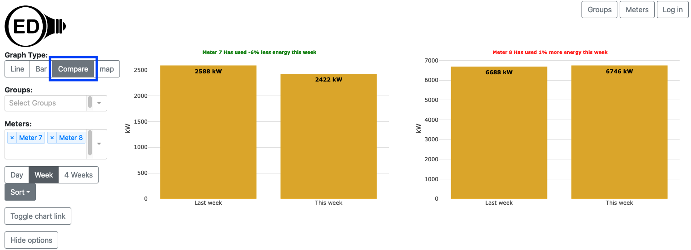
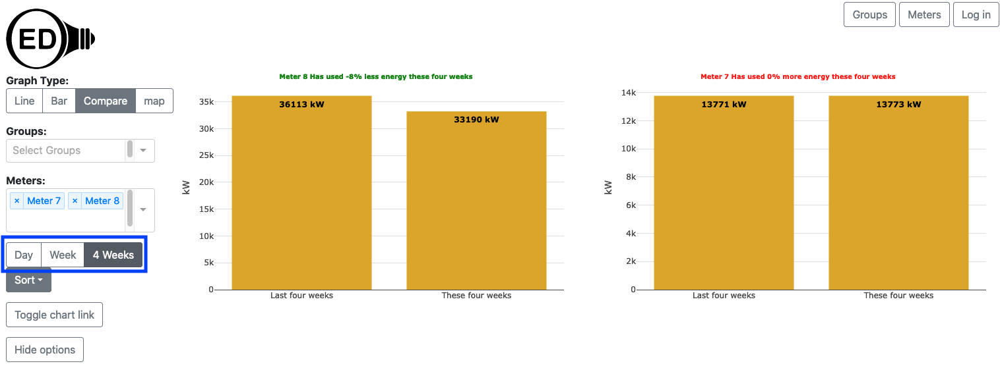
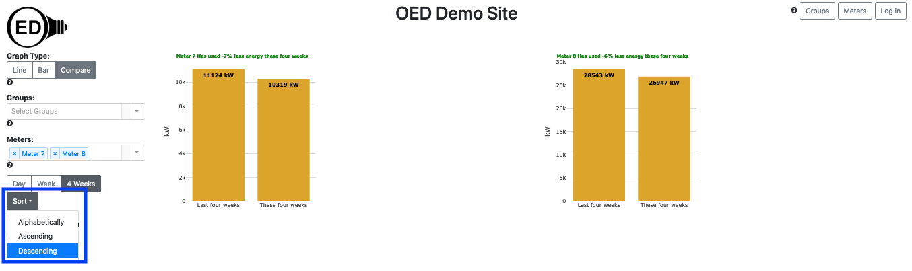

OED Documentation
Compare Graphic
Version V0.6.0
The latest version of this page is V1.0.0.
Documentation overview
User documentation
Information
Meters/Groups
Other Features
Admin documentation
Documentation versions for this page
Overview
A compare graphic shows each meter and group as its own bar graphic with two bars where one is for past usage and one is for current usage. The past usage immediately precedes the current period. The title of each bar graphic indicates the percentage change in usage between these two bars. The common usage allows for the selection of multiple meters/groups to see the trend in usage and to compare across them to see which ones are improving more than others. The following figure shows a compare graphic for Meter 7 and Meter 8. Each bar represents one week of data so it is the total usage of the indicated meter for that week. Since it is total usage, the units are for energy, e.g., kWh for electricity. To get this graphic, you click the "Compare" choice (highlighted with a blue box). 
A compare graphic can show an arbitrary choice and number of meters and groups. As described below, you can control the time frame for the comparison on the compare graphic.
Usage
You select the meters and/or groups to graph in the usual way. OED will display each meter and group as a unique graphic with two bars. The bar on the left is for the past usage period ("Yesterday", "Last week" or "Last four weeks") and the bar on the right is for the current usage period ("Today", "This week" or "These four weeks"). As seen in the figure above, the title displays the meter/group involved and the percentage change in usage from the previous to current period. For example, Meter 8 has a percentage change of 1% because the ratio of the current to previous is 6746 / 6688 = 1.009 and OED rounds to the nearest whole number as a percentage. OED colors the tile green if usage went down (negative percentage) and red if usage went up (positive percentage) or stayed the same (0%).
You can select the time range in days for comparison by clicking one of the predefined time ranges (highlighted with a blue box in the next figure) where the choices are "Day", "Week" (default) or "4 Weeks". The figure below is the result of clicking on the "4 Week" choice (it was "Week" in the figure above). 
When you hover over one of the bars, it says "used this time yesterday" or "used so far today" (in the case of "Day"). This is meant to indicate that OED is giving you data for as much of the time period you have used up to this point in time. This means that the values generally change if you look at them at a later time. Keep in mind that OED meter data is updated as frequently as the site has arranged (often every hour) so you will not actually see the result to the exact current time. Here is how each of the time intervals is calculated:
- "Day": Today begins at the midnight immediately preceding the current time. Yesterday begins at midnight of the day before. For example, if the current date/time is Thursday, February 18 at 10:13 (February 18 is a Thursday in 2021 as a reference) then today is from Thursday, February 18 at midnight to Thursday, February 18 at 10:13 and yesterday is Wednesday, February 17 at midnight to Thursday, February 17 at 10:13.
- "Week": This week begins at midnight on the Sunday immediately preceding the current day/time (meaning if it is Sunday then start at midnight of that Sunday). Last week begins at midnight of the previous Sunday. For example, if the current date/time is Thursday, February 18 at 10:13 then this week is from Sunday, February 14 at midnight to Thursday, February 18 at 10:13 and last week is Sunday, February 7 at midnight to Thursday, February 11 at 10:13.
- "4 Weeks": These four weeks begin three Sundays before the one at midnight for this week and the last four weeks begins four Sundays earlier at midnight. For example, if the current date/time is Thursday, February 18 at 10:13 then these four weeks is from Sunday, January 24 at midnight to Thursday, February 18 at 10:13 and last week is Sunday, December 27 at midnight to Thursday, January 21 at 10:13.
This means that you are missing the end of one unit for each time frame. Thus, in "Day" you see part of a day, in "Week" you see part of a week and in "4 Weeks" you see 3+ weeks of data in each bar. Note that if you look soon after midnight on Sunday then day and week comparisons will have low values since very little time has past.
To make comparisons across multiple meters/groups easier, OED allows the ordering of the graphs to be changed. The next figure shows the result of clicking the "Sort" dropdown menu (highlighted with a blue box) that allows the user to choose the ordering of the comparison graphics. (Note a bug in v0.6.0 of OED reversed Ascending and Descending but this was fixed in v0.7.0.) 
The choices are:
- "Alphabetically": This places them alphabetically by the name of the meter/group.
- "Ascending": This places the meter/group with the greatest reduction in usage first and continues until it places the one with the worst reduction in usage last. Note that a reduction leads to a smaller percentage change where negative values are even better. Thus, negative values represent an actual reduction and positive value represents an increase in usage. The common usage is to show who reduced consumption the most.
- "Descending" (default): Similar to "Ascending" but in the opposite order. The common usage is to show who reduced consumption the least (which might actually be an increase in consumption).
Details
Missing data
Since OED starts calculating the current usage from the current time, there are circumstances where issues can occur. If any meter/group being graphed is missing recent data then the calculated values will be low and the comparison skewed (assuming the previous period has all its data). This is a special case of any time a meter/group is missing data but more common as the acquisition of new data might be delayed due to hardware/network/software issues. OED hopes to address this issue in a future release.
Why 4 weeks?
OED deliberately chose 4 week intervals rather than the more common month. When you are comparing two different interval periods and the number of days vary then the total usage will vary even if the underlying usage is constant. This happens when comparing months because different months have a different number of days. (and February can vary by year!) To avoid this issue, OED used 4 weeks consistently throughout.